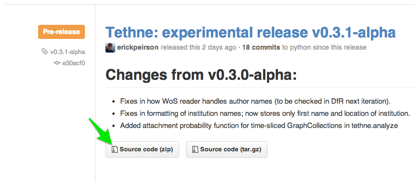
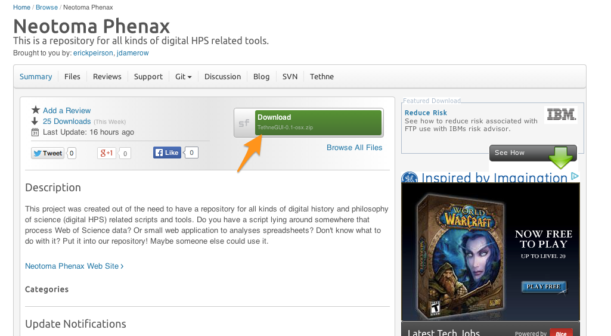

Installation¶
The following sections describe how to install the Tethne package and TethneGUI. Since Tethne is under active development, we’re making improvements and adding features all the time. It’s a good idea to stay on top of new releases. To get notifications about new releases, you should watch our GitHub repository.

- Find our GitHub repository at https://github.com/diging/tethne
- Click the Watch button in the upper-right corner of the page, and select Watching.
Requirements¶
Tethne requires the following software and packages.:
Anaconda¶
We recommend installing Anaconda, which will install Python, Numpy, NLTK, and a variety of other useful libraries. Installation instructions for Anaconda can be found here. This may be a good idea even if you already have Python installed on your system.
Python 2.7¶
Tethne requires Python 2.7; Python 3 is not fully backwards-compatible, and Tethne will not work properly with that version. If you installed Anaconda, Python 2.7 should already be installed.
You may already have Python installed on your system. To find out, open a new command-line window. On Mac, find Terminal in Applications > Utilities; on Windows, go to Start > All Programs > Accessories > Command Prompt. Type in python and press enter. If Python is installed, the command-line interpreter should start:
$ python
Python 2.7.5 |Anaconda 1.6.1 (x86_64)| (default, Jun 28 2013, 22:20:13)
[GCC 4.0.1 (Apple Inc. build 5493)] on darwin
Type "help", "copyright", "credits" or "license" for more information.
>>>
Note that the version number (Python 2.7.5) is listed in the first line when the interpreter starts. If you have Python 2.7.x, you’re good to go.
If Python is not installed, or you have the wrong version of Python, you can find the latest versions of Python here.
Windows users should use the 32-bit version of Python. Look for the Windows x86 MSI Installer. For details about installing Python on Windows, see Installing Python on Windows.
NumPy¶
NumPy stands for Numerical Python. NumPy is a Python library that provides functionality for scientific computing.
If you installed Anaconda, NumPy should already be installed. Otherwise, you can find an installer for your operating system on the NumPy SourceForge project. Mac users should download and install numpy-1.8.0-py2.7-python.org-macosx10.6.dmg. Windows users should download and install numpy-1.8.0-win32-superpack-python2.7.exe.
NLTK¶
NLTK stands for Natural Language ToolKit. If you installed Anaconda, NLTK should already be installed. For installation instructions, see the NLTK documentation.
NetworkX¶
NetworkX is a Python package for network analysis. The easiest way to install NetworkX is to use pip. pip installs Python packages from the Python Package Index. You will need to be connected to the internet in order for pip to successfully download and install packages.
First, check to see whether you have pip installed. Open the command prompt, and enter pip --version. If pip is installed, you should see something like:
$ pip --version
pip 1.3.1 from /anaconda/lib/python2.7/site-packages (python 2.7)
Otherwise, you’ll need to install pip. See this installation guide.
Once pip is installed, install NetworkX by entering the following in the command prompt:
$ sudo pip install networkx
You will be prompted to enter your password.
If all goes well, you should be able to import NetworkX in Python:
$ python
Python 2.7.5 |Anaconda 1.6.1 (x86_64)| (default, Jun 28 2013, 22:20:13)
[GCC 4.0.1 (Apple Inc. build 5493)] on darwin
Type "help", "copyright", "credits" or "license" for more information.
>>> import networkx
>>>
Tethne for Python and Command-line¶
From PyPI¶
Tethne is available via the Python Package Index. You can install the latest release using pip
$ sudo pip install tethne
Password:
Downloading/unpacking tethne
Downloading tethne-0.3.0-alpha.tar.gz (61kB): 61kB downloaded
Running setup.py egg_info for package tethne
Installing collected packages: tethne
Running setup.py install for tethne
Successfully installed tethne
Cleaning up...
From GitHub¶
Alternatively, you can find the latest release of Tethne in our GitHub repository.
Download the source code.
Unpack the .zip/.tar.gz archive (e.g. tethne-0.3.1-alpha.zip). This should create a new folder, e.g. tethne-0.3.1-alpha.
Open the command prompt, and navigate to the folder where you unpacked Tethne. For example, if you unpacked Tethne in your Downloads folder, use:
$ cd ~/Downloads
If you have pip installed, use:
$ sudo pip install ./tethne-0.3.1-alpha
(change tethne-0.3.1-alpha to reflect the release that you downloaded).
If you don’t have pip, you can use:
$ sudo python ./tethne-0.3.1-alpha/setup.py install
If Tethne is installed successfully, you should be able to import it in the Python interpreter:
$ python
Python 2.7.5 |Anaconda 1.6.1 (x86_64)| (default, Jun 28 2013, 22:20:13)
[GCC 4.0.1 (Apple Inc. build 5493)] on darwin
Type "help", "copyright", "credits" or "license" for more information.
>>> import tethne.readers as rd
>>>
Alias¶
To make using Tethne from the command-line a bit easier, create a permanent alias.
Mac:
Add the following line to ~/.bash_profile:
alias tethne='python [TETHNE PATH]'
- To find the [TETHNE PATH], start the Python interpreter in Terminal, and import Tethne. Then call tethne.__file__. In the example below, the path that we’re looking for is /anaconda/lib/python2.7/site-packages/tethne:
$ python
Python 2.7.5 |Anaconda 1.6.1 (x86_64)| (default, Jun 28 2013, 22:20:13)
[GCC 4.0.1 (Apple Inc. build 5493)] on darwin
Type "help", "copyright", "credits" or "license" for more information.
>>> import tethne
>>> tethne.__file__
'//anaconda/lib/python2.7/site-packages/tethne/__init__.pyc'
>>>
- In TextWrangler, open the file .bash_profile in your Home directory. You may need to set Enable to Everything, and check the Show hidden files checkbox.

- Add the line alias tethne='python [TETHNE PATH]' (change [TETHNE PATH] to the Tethne installation path, from step 1) to the end of ._bash_profile, then save and close the file.

- Open a new Terminal window, and enter tethne. If all goes well, you should see:
$ tethne
Must specify --dataset-id
Tethne GUI¶
You can find the most recent build of the Tethne GUI on the Neotoma phenax SourceForge repository.
- Download the version of TethneGUI appropriate for your operating system. Look for the green download button near the center of the page. Clicking this button will take you to a new page, and after a few seconds you should start downloading a .zip archive (e.g. TethneGUI-0.1-osx.zip)
- Once the download completes, unpack it. This will create a new directory called TethneGUI. Move this directory to a place in your filesystem where you can find it later (e.g. your Applications folder).
- Look inside the TethneGUI folder. On Mac, double-click TethneGUI.app, inside. On Windows, run TethneGUI.exe.
Once TethneGUI loads, you should see a window that looks like this: